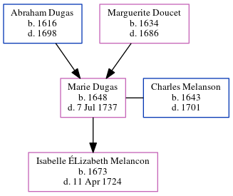

Marie Melanson (née Dugas) 1648 - 1737
[ Home ] | [ Calendar ] | [ Surnames Index ] | [ Census Index ] | [ Family History ]The child of Abraham Dugas and Marguerite Doucet, Marie Dugas, the 9 times great-grandmother of Michele Copp (née Phillips), was born in , Nova Scotia, Canada in 16481 and married Charles Melanson (with whom she had 1 child, Isabelle Élizabeth) in Port Royal, , New Brunswick, Canada in 1663, which is also where she died on Jul 7, 1737.
Parents
- Abraham was born in 1616
- Marguerite Louise was born in 1634
Children
- Isabelle Élizabeth was born in 1673
Citations
- U.S. and International Marriage Records, 1560-1900 Online publication - Provo, UT, USA: The Generations Network, Inc., 2004.Original data - This unique collection of records was extracted from a variety of sources including family group sheets and electronic databases. Originally, the information was deriv
Family Tree
Generated by ged2site. Last updated on Jun 6, 2024